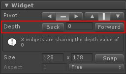
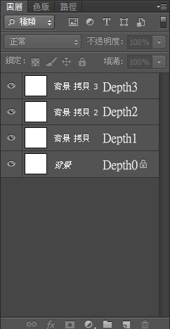
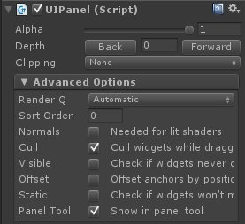

前幾篇中出現了很多 NGUI 物件
UILabel、UITexture、UISprite
他們都有某些共通點
例如 UIWidget

Widget 中的 Depth 可以很方便的調整各個圖片間的前後關係
數字越小顯示的越早
如果以 Photoshop 來理解的話
Depth 越小，代表了越底層的圖層

而 Depth 不只出現在 UILabel、UITexture、UISprite
點選 UIRoot 物件後可以發現
在 UIPanel 裡的屬性欄位也有一個 Depth 選項

UIPanel 中的 Depth 和 UIWidget 中的 Depth 其理解上是一樣的
差別在於 UIPanel 的 Depth 層級比 UIWidget 還高一階
可以理解為 UIPanel 為第一層圖層
而 UIWidget 為第二層圖層